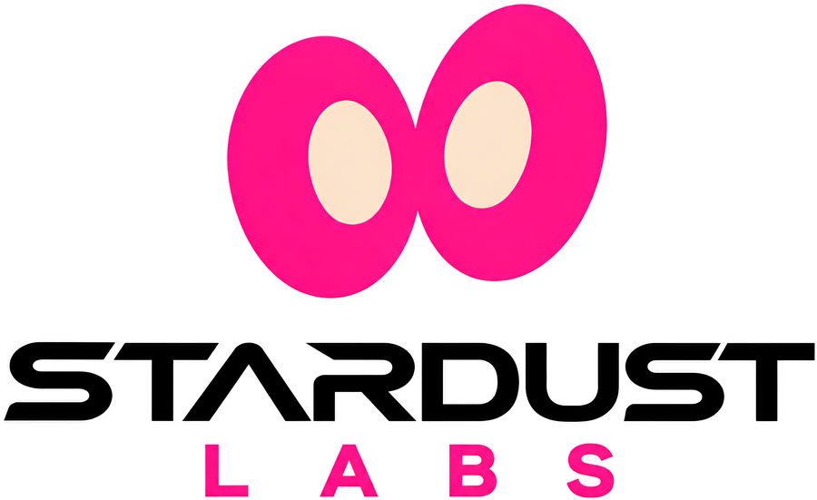

A Stardust Labs é um laboratório de eletrônica, design e pequenas emoções.

Texto provisório. Aqui entra a história da Stardust: como surgiu a ideia, quem está por trás e por que decidimos criar robôs que transmitem emoção.
O primeiro rosto do Karlu nasceu de um par de olhos rosa e uma pupila tímida. De lá para cá, ele aprendeu a piscar, a se espantar, a se apaixonar e a ouvir.
Tecnologia é meio. O que importa é o sorriso que o Karlu arranca de quem olha para ele.
Cada piscada, cada olhar de canto e cada humor é ajustado à mão até parecer natural.
O Karlu cresce: novas versões, novos sensores e novas expressões chegam para a família Stardust.
Um robô pequeno, com olhos que mostram o que sente. Texto provisório.
Ovais inclinados, pupila tímida e um fundo bem escuro. Nascia o rosto rosa do Karlu.
Reações, cores, Bluetooth, microfone e a abertura com a marca Stardust Labs.
Voz, som, giroscópio e câmera: o Karlu cada vez mais perto de você.
Três versões para você escolher. E se tiver dúvida, é só chamar a gente.
Ver modelos